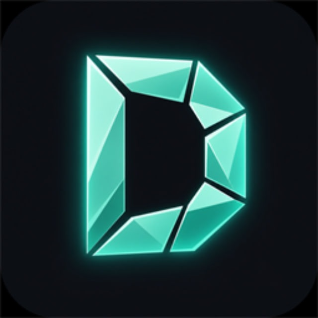

◈
Мир
Target ESP, HitColor, Block Highlight, Chunk Reveal, China Hat, Particles, Kill Effects, Fog, Ambience.

DooreVisualsMinecraft 1.21.11 · Fabric
Liquid glass HUD, ClickGUI, GPS, HitColor, частицы и темы. Клиентский визуал с чистым cyan-интерфейсом.
С телефона клиент не ставится. Открой сайт на компьютере или сохрани ссылку из Telegram.
Контроль визуала, скорость настройки и точность HUD — в одном клиенте.
Target ESP, HitColor, Block Highlight, Chunk Reveal, China Hat, Particles, Kill Effects, Fog, Ambience.
Full Bright, Zoom, Viewmodel, Swing Animation, Hit Sound, Item Physics, Auto Sprint.
Liquid glass HUD, прицел, array list, кастомное меню и death screen.
Discord RPC, GPS, уведомления, Alt Manager, кнопка «Продолжить».
Профили, save/load, share-коды DV-T / DV-C для темы и конфига.
Blue, Violet, Emerald, Pink, Fire — акценты под твой стиль.
Скачал лоадер — всё остальное он подтянет сам.
Скачай DooreVisuals.exe с сайта — этого достаточно.
Лоадер сам скачает клиент, зависимости и обновления.
Открой ClickGUI, выбери тему и модули — готово.
Полный разбор интерфейса и модулей.
Один файл — всё остальное подтянется само. Новости и сборки — в Telegram @doorvs.
Скачай лоадер на ПК и зайди в Telegram за апдейтами.